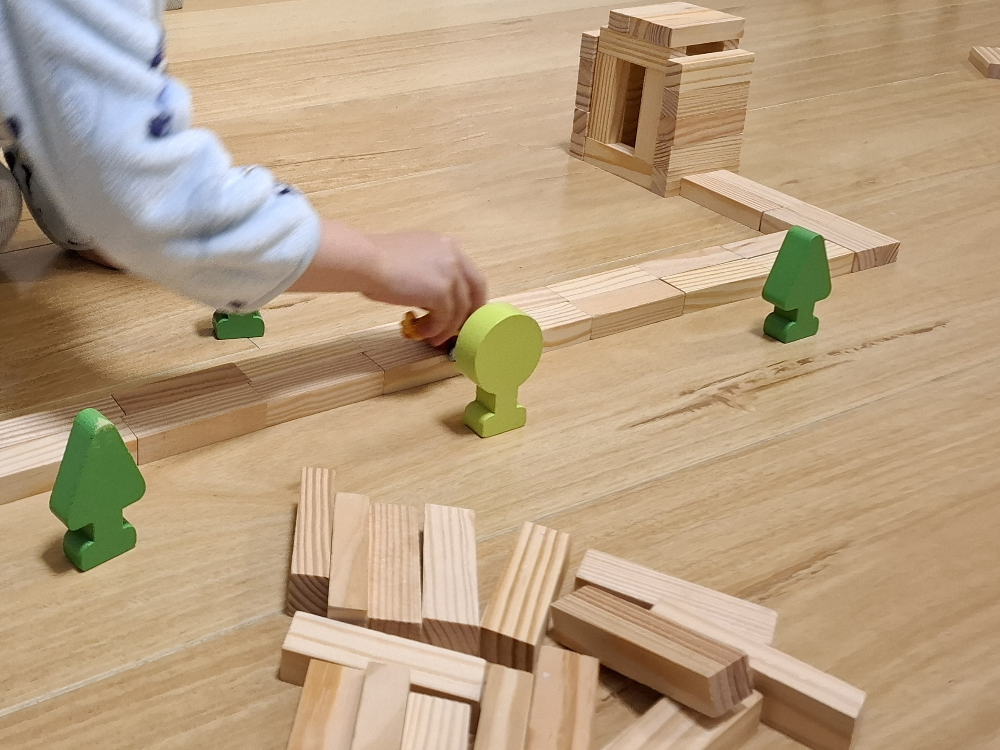

Construction in Progress...

Hi, I am an anthropologist. I travel, ask, and write.
My teaching and research have taken me across China, Australia, Ethiopia, and Botswana. Through this experience, I bring together local ethnographic insights with broader global processes.
On this homepage, my work is organised around three interconnected themes. I invite you to explore them through flipping the cards on the right.

Construction in Progress...